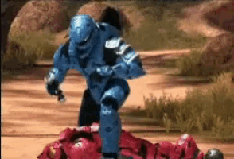
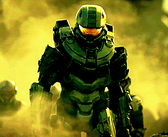

Perseguidos sem trégua, os sobreviventes humanos são forçados a pousar na superfície do misterioso anel,
clique
Após a devastadora derrota na colônia humana de Reach, a nave estelar Pillar of Autumn realiza um salto espacial desespero ás cegas para escapar das forças alienígenas do Covenant.


Perseguidos sem trégua, os sobreviventes humanos são forçados a pousar na superfície do misterioso anel,